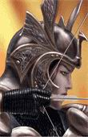
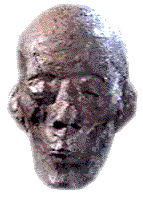

Forums galactiques > Assemblée Galactique : diplomatie officielle > Hymne !!!
Pages : 1
| Thot71 Respect diplomatique : 424  21/07 ETU 22:18 | Score : 11 Détails Thot entra dans l'Assemblée ... Il etait revenu, et etait en chair et en os. Il s'etait changé, et avait l'air changé, plus mature, plus serein, pourrait-ont dire.
Avec lui, quatres Hommes. Trois portaient chacun un cor, le dernier une simple partition. Thot commença son allocution sur ses mots : "Mes amis, mes tres chers amis, c'est avec plaisir que je foule de nouveau le sol de l'AG. Mais je ne resterai ici que peu de temps ... La Pierre de Lumen reste encore a decouvrir. Si je suis ici, c'est pour vous faire part de l'hymne, que j'ai créé, et qui representera l'OPU ... Je vous laisse le plaisir de l'ecouter ..." Thot se recula, et les quatres hommes s'avancerent. Les cors se mirent a jouer un air assez lent et plutot doux. Les sons de montaient guere dans les Octaves. L'autre Homme s'avanca, et commenca de chanter de sa voix de baryton ... "Un peuple, une nation, une civilisation, un Univers ... Des Elfes, des Hommes, des Vampires, des Demons ... Tous differents, Tous pareil ... Tous differents, Tous pareil ... Chacun recherchant leurs propres bonheurs ... Un bonheur, que certains trouvent dans la liberté ... Liberté, liberté cherie ... Liberté, phoenix renaissant de tes cendres ... Tu nous apporte le plus simple bonheur ... Celui de pouvoir agir en conscience de nos actes ... Liberté, liberté cherie ... Tu es si ephemere, si volatile ... Que nous ferions n'importe quoi pour te retrouver ... Meme la guerre ... Liberté, liberté cherie ... Liberté, liberté cherie ... Ruisseau en furie, capable de tout renverser Nous ne souhaitons qu'une chose ... Liberté, liberté chérie ..." Merci de votre attention et de votre ecoute ... J'espere que cette hymne vous aura convaincu et plut ... Je vous laisse sur ses quelques notes de musiques ... Thot se retira de l'AG et regagna l'IBIS ... Il devait rejoindre au plus vite ces hommes, ils les sentaient en danger ... | ||
| Perlelune Respect diplomatique : 299  21/07 ETU 23:02 | Score : 6 Détails Perlelune, de retour depuis peu d'un très longue méditation nécéssaire au vu de la situation galactique, avait écouter Thot braillé plus que chanter son hymne. Elle se leva, applaudit, un petit sourire aux lèvres, puis se rassit.
| ||
| OWZ Respect diplomatique : 84  21/07 ETU 23:30 | Score : 3 Détails OWZ avait écouté son partenaire de danse galactique chanter ; certes un peu faux mais au moins le coeur y était et l'envie d'unifier les peuples, de chanter la paix était plus que louable.
Soudain il remarqua sur le banc une gigantesque patate et furtivement une chèvre : "DTYDE*****, lâcha-t-il tout haut, captant du coup l'attention des commandant. Il faudra ne pas oublier ces races dans l'hymne la prochaine fois, pensa-t-il, rouge de honte sous sa tunique bleu-violine." Puis au détour d'un regard perdu, il croisa le pas silencieux de Perlelune ainsi que son sourire en coin : - "Tiens donc ?" Il parlait alors à son ami Picsou. "Celle-ci est enfin revenue de sa lune de miel ? Je vois que son cadeau - tu sais un p'tit Empire Arcien pour les noces - ne l'a pas rendue plus belle. Angelus n'a pas dû s'amuser tous les jours s'il n'avait pas de pilules rouges à disposition..." Plus discrètement : - "Au fait, c'est qui le nouveau chanteur qui va remplacer Thot, parce que là, je suis pas sûr que tous les commandeurs vont comprendre la beauté de son coeur ?" | ||
| Perceval42 Respect diplomatique : 305  21/07 ETU 23:56 | Score : 3 Détails Perceval42 se balladait depuis pas mal de siècle dans les galaxie mais un espèce de barouffe le surpris!
Puis en faisant de plus en plus attention, il reconnut des cythares totiennes. Et une voix âpre et mielleuse à la fois, un peu divine.... "Mais c'est bien sûr Thot!!Quel artiste!! Voilà une belle mélodie que je n'avais pas entendu depuis au moins 600 ans. Voilà qui remet du baume au coeur!!" Perceval se laissa bercer par la musique. La musique lui donna la nostalgie du Royaume du Roi Pêcheur.Enfin un moment de calme! | ||
| Herbert Von Panzer Respect diplomatique : 502 22/07 ETU 01:42 | Score : 4 Détails Herbert Von Panzer venait de se faufiler chez Gaston Lagaffe et lui avait subtilisé son Gaffophone pour quelques instants, dans l'espoir d'accompagner musicalement son ami Thot71.
Il arriva dans la salle et lacha un trimphal "POUEEEEEEET !", qui eut un effet ravageur sur son auditoire. Mais déja que les talents musicaux d'Herbert au départ étaient médiocres, la beauté du son de l'instrument n'était pas perceptible aux oreilles de tous. Ceux qui ne partirent pas du départ en courant furent très vite pris de vertiges et tombèrent dans les pommes comme des mouches à qui l'ont aurait fait respirer une bombonne entière d'insecticide. Moralité : La musique adoucis les moeurs, mais les fausses notes tuent les tympans. (vieux proverbe sans doutes chinois) |
Pages : 1
Forums galactiques > Assemblée Galactique : diplomatie officielle > Hymne !!!